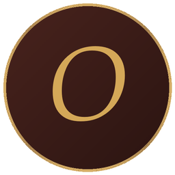

Orchestrion¿Solo el ritmo? ¿Solo la mano derecha? En ambos casos, oyes la pieza entera. Con un teclado MIDI o el teclado del ordenador.
Orchestrion es una aplicación de escritorio para Windows, macOS y Linux.
Libre y gratuito (GPL-3.0) · todas las versiones
Rolls es una biblioteca de partituras de dominio público o con licencia libre, hechas para Orchestrion.
Explorar Rolls